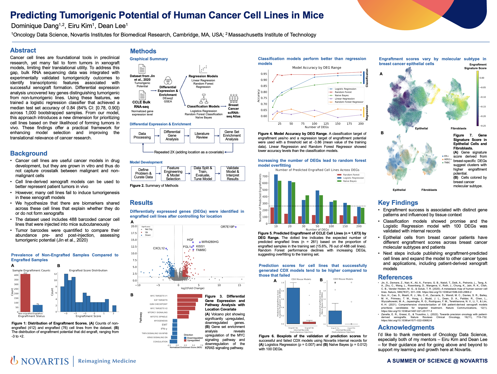

Novartis Oncology Data Science Internship
Integrated bulk RNA-seq data with tumorigenicity outcomes to identify transcriptomic features linked to successful tumor formation, and trained a machine learning model to prioritize cell lines by their in vivo tumor-forming potential.
What I learned
- Differential gene expression and gene set enrichment analysis
- Machine learning: random forest, Naive Bayes, logistic regression, and linear regression
- Scanpy for single-cell RNA-seq data analysis
Prizes received
- 1st Place: Innovation in Research – Data Science
- 2nd Place: Innovation in Research – Overall
- 2nd Place: Innovation in Research – Scientific Content & Merit
- 3rd Place: Poster Display & Presentation